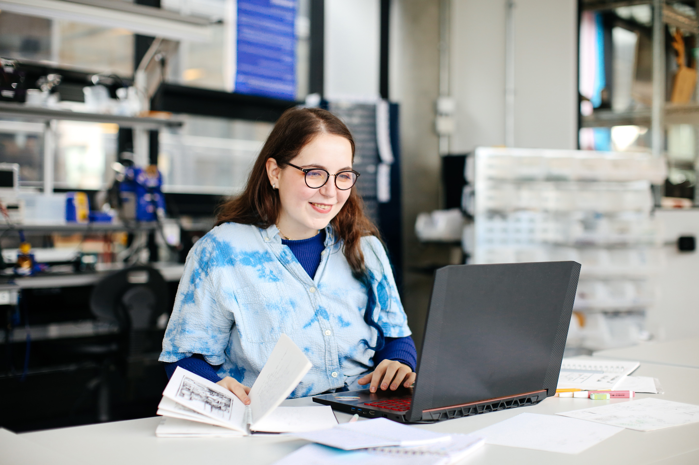

A propos
Copyright Alys Tomlinson
Bonjour, je m'appelle Lucie Brosson. Je suis étudiante dans un DSAA numérique à l'ENSAAMA Olivier de Serres à Paris, France. Avant ça, j'ai fait un bachelor en Creative Computing au CCI, UAL, Londres, UK. Je recherche en ce moment un stage de 3 mois. Je suis passionnée par la réalité virtuelle, le code et la création de monde. J'ai un intêret pour le codage et l'art ce qui me permet de mieux apprécier les projets qui se retrouvent entre ces deux disciplines. J'aime apprendre et travailler en équipe, cela me permet de mieux mener mes projets à bien.
Vous pouvez télécharger mon mail ici